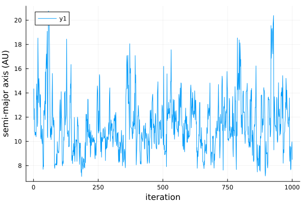
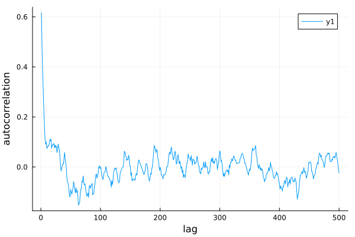
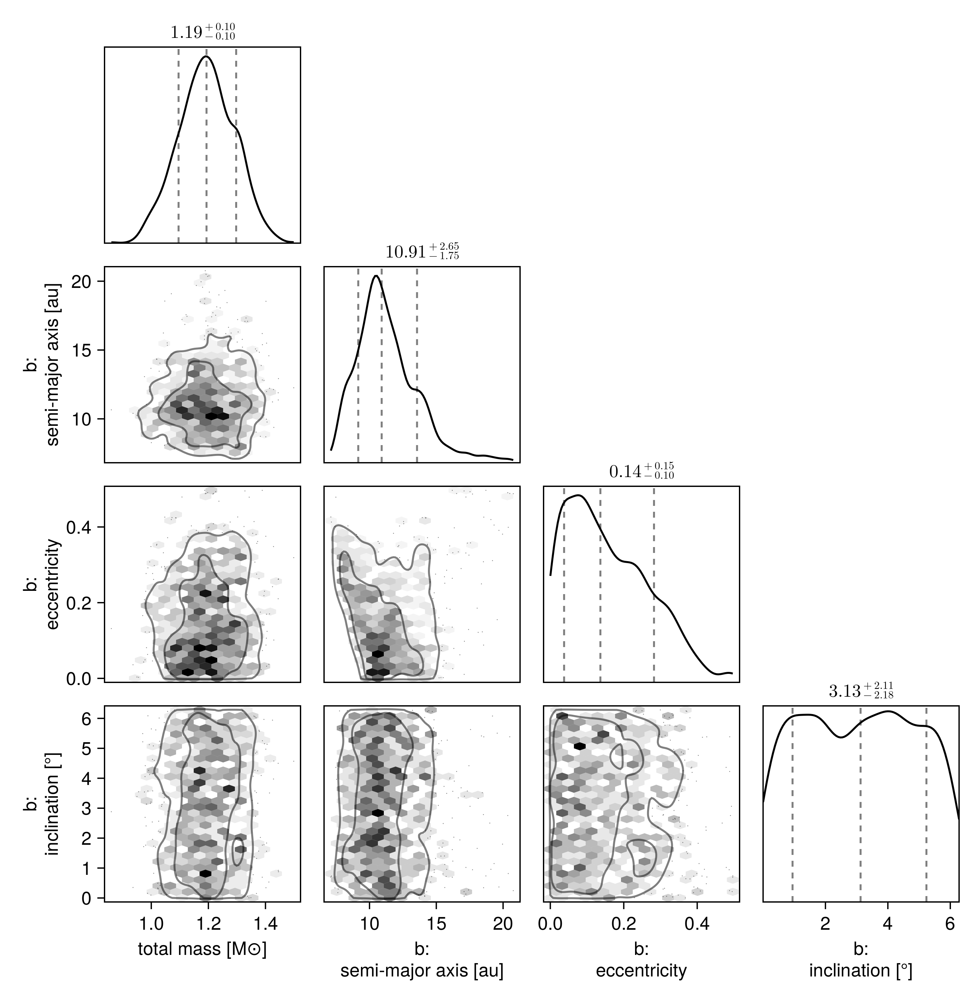

Fit Relative Astrometry
Here is a worked example of a one-planet model fit to relative astrometry (positions measured between the planet and the host star).
Start by loading the Octofitter and Distributions packages:
using Octofitter, DistributionsSpecifying the data
We will create a likelihood object to contain our relative astrometry data. We can specify this data in several formats. It can be listed in the code or loaded from a file (eg. a CSV file, FITS table, or SQL database).
astrom = PlanetRelAstromLikelihood(
(epoch = 5000, ra = -505.7637580573554, dec = -66.92982418533026, σ_ra = 10, σ_dec = 10, cor=0),
(epoch = 5120, ra = -502.570356287689, dec = -37.47217527025044, σ_ra = 10, σ_dec = 10, cor=0),
(epoch = 5240, ra = -498.2089148883798, dec = -7.927548139010479, σ_ra = 10, σ_dec = 10, cor=0),
(epoch = 5360, ra = -492.67768482682357, dec = 21.63557115669823, σ_ra = 10, σ_dec = 10, cor=0),
(epoch = 5480, ra = -485.9770335870402, dec = 51.147204404903704, σ_ra = 10, σ_dec = 10, cor=0),
(epoch = 5600, ra = -478.1095526888573, dec = 80.53589069730698, σ_ra = 10, σ_dec = 10, cor=0),
(epoch = 5720, ra = -469.0801731788123, dec = 109.72870493064629, σ_ra = 10, σ_dec = 10, cor=0),
(epoch = 5840, ra = -458.89628893460525, dec = 138.65128697876773, σ_ra = 10, σ_dec = 10, cor=0),
)PlanetRelAstromLikelihood Table with 6 columns and 8 rows:
epoch ra dec σ_ra σ_dec cor
┌────────────────────────────────────────────
1 │ 5000 -505.764 -66.9298 10 10 0
2 │ 5120 -502.57 -37.4722 10 10 0
3 │ 5240 -498.209 -7.92755 10 10 0
4 │ 5360 -492.678 21.6356 10 10 0
5 │ 5480 -485.977 51.1472 10 10 0
6 │ 5600 -478.11 80.5359 10 10 0
7 │ 5720 -469.08 109.729 10 10 0
8 │ 5840 -458.896 138.651 10 10 0In Octofitter, epoch is always the modified Julian date (measured in days). If you're not sure what this is, you can get started by just putting in arbitrary time offsets measured in days.
In this case, we specified ra and dec offsets in milliarcseconds. We could instead specify sep (projected separation) in milliarcseconds and pa in radians. You cannot mix the two formats in a single PlanetRelAstromLikelihood but you can create two different likelihood objects, one for each format.
Another way we could specify the data is by column:
astrom = PlanetRelAstromLikelihood(Table(;
epoch= [
5000,
5120,
5240,
5360,
5480,
5600,
5720,
5840,
],
ra = [
-505.764,
-502.57,
-498.209,
-492.678,
-485.977,
-478.11,
-469.08,
-458.896,
],
dec = [
-66.9298,
-37.4722,
-7.92755,
21.6356,
51.1472,
80.5359,
109.729,
138.651,
],
σ_ra = fill(10.0, 8),
σ_dec = fill(10.0, 8),
cor = fill(0.0, 8)
))PlanetRelAstromLikelihood Table with 6 columns and 8 rows:
epoch ra dec σ_ra σ_dec cor
┌────────────────────────────────────────────
1 │ 5000 -505.764 -66.9298 10.0 10.0 0.0
2 │ 5120 -502.57 -37.4722 10.0 10.0 0.0
3 │ 5240 -498.209 -7.92755 10.0 10.0 0.0
4 │ 5360 -492.678 21.6356 10.0 10.0 0.0
5 │ 5480 -485.977 51.1472 10.0 10.0 0.0
6 │ 5600 -478.11 80.5359 10.0 10.0 0.0
7 │ 5720 -469.08 109.729 10.0 10.0 0.0
8 │ 5840 -458.896 138.651 10.0 10.0 0.0Finally we could also load the data from a file somewhere. Here is an example of loading a CSV:
using CSV # must install CSV.jl first
astrom = CSV.read("mydata.csv", PlanetRelAstromLikelihood)You can also pass a DataFrame or any other table format.
Creating a planet
We now create our first planet model. Let's name it planet b. The name of the planet will be used in the output results.
In Octofitter, we specify planet and system models using a "probabilistic programming language". Quantities with a ~ are random variables. The distributions on the right hand sides are priors. You must specify a proper prior for any quantity which is allowed to vary.
We now create our planet b model using the @planet macro.
@planet b Visual{KepOrbit} begin
a ~ truncated(Normal(10, 4), lower=0, upper=100)
e ~ Uniform(0.0, 0.5)
i ~ Sine()
ω ~ UniformCircular()
Ω ~ UniformCircular()
τ ~ UniformCircular(1.0)
P = √(b.a^3/system.M)
tp = b.τ*b.P*365.25 + 5000 # reference epoch for τ. Choose an MJD date near your data.
end astromThere's a lot going on here, so let's break it down.
First, Visual{KepOrbit} is a kind of orbit parameterization from PlanetOrbits.jl that we will use for this. A KepOrbit uses the traditional Keplerian orbital elements like semi-major axis and inclination. The Visual{...} part surrounding it adds support for parallax distance and allows a Keplerian orbit to be projected into the plane of the sky, which is where our relative astrometry data lives! A KepOrbit by itself can only be used to fit position measurements in astronomical units. The Visual{...} part makes it so we can calculate and specify observed angles between the star and planet.
You can read about orbit parameterizations in the PlanetOrbits.jl documentation page.
Other options include the similar ThieleInnesOrbit which uses a different parameterization, as well as RadVelOrbit which is useful for modelling radial velocity data. These can also be wrapped in Visual{...} if we want to e.g. project a RadVelOrbit onto the plane of the sky.
After the begin comes our variable specification. Quantities with a ~ are random variables. The distribution son the right hand sides are priors.You must specify a proper prior for any quantity which is allowed to vary. "Uninformative" priors like 1/x must be given bounds, and can be specified with LogUniform(lower, upper).
Priors can be any univariate distribution from the Distributions.jl package.
For a KepOrbit you must specify the following parameters:
a: Semi-major axis, astronomical units (AU)i: Inclination, radiuse: Eccentricity in the range [0, 1)τ: Epoch of periastron passage, in fraction of orbit [0,1] (periodic outside these bounds)ω: Argument of periastron, radiusΩ: Longitude of the ascending node, radians.
The parameter τ represents the epoch of periastron passage as a fraction of the planet's orbit between 0 and 1. This follows the same convention as Orbitize! and you can read more about their choice in ther FAQ. Many different distributions are supported as priors, including Uniform, LogNormal, LogUniform, Sine, and Beta. See the section on Priors for more information. The parameters can be specified in any order.
You can also hardcode a particular value for any parameter if you don't want it to vary. The syntax for this is:
e = 0.1 # hardcode eccentricityThis = syntax works for arbitrary mathematical expressions and even most functions, even many function from external libraries. For example, if you wanted to place a uniform prior on the square-root of eccentricity, you could specify:
e_sqrt ~ Uniform(0, 1)
e = sqrt(b.e_sqrt)Note how e_sqrt is allowed to vary, and e is calculated from it deterministically.
After the variables block are zero or more Likelihood objects. These are observations specific to a given planet that you would like to include in the model. If you would like to sample from the priors only, don't pass in any observations.
For this example, we specify PlanetRelAstromLikelihood block. This is where you can list the position of a planet relative to the star at different epochs.
When you have created your planet, you should see the following output. If you don't, you can run display(b) to force the text to be output:
Planet b
Derived:
ω, Ω, τ, P, tp,
Priors:
a Truncated(Distributions.Normal{Float64}(μ=10.0, σ=4.0); lower=0.0, upper=100.0)
e Distributions.Uniform{Float64}(a=0.0, b=0.5)
i Sine()
ωy Distributions.Normal{Float64}(μ=0.0, σ=1.0)
ωx Distributions.Normal{Float64}(μ=0.0, σ=1.0)
Ωy Distributions.Normal{Float64}(μ=0.0, σ=1.0)
Ωx Distributions.Normal{Float64}(μ=0.0, σ=1.0)
τy Distributions.Normal{Float64}(μ=0.0, σ=1.0)
τx Distributions.Normal{Float64}(μ=0.0, σ=1.0)
Octofitter.UnitLengthPrior{:ωy, :ωx}: √(ωy^2+ωx^2) ~ LogNormal(log(1), 0.02)
Octofitter.UnitLengthPrior{:Ωy, :Ωx}: √(Ωy^2+Ωx^2) ~ LogNormal(log(1), 0.02)
Octofitter.UnitLengthPrior{:τy, :τx}: √(τy^2+τx^2) ~ LogNormal(log(1), 0.02)
PlanetRelAstromLikelihood Table with 6 columns and 8 rows:
epoch ra dec σ_ra σ_dec cor
┌────────────────────────────────────────────
1 │ 5000 -505.764 -66.9298 10.0 10.0 0.0
2 │ 5120 -502.57 -37.4722 10.0 10.0 0.0
3 │ 5240 -498.209 -7.92755 10.0 10.0 0.0
4 │ 5360 -492.678 21.6356 10.0 10.0 0.0
5 │ 5480 -485.977 51.1472 10.0 10.0 0.0
6 │ 5600 -478.11 80.5359 10.0 10.0 0.0
7 │ 5720 -469.08 109.729 10.0 10.0 0.0
8 │ 5840 -458.896 138.651 10.0 10.0 0.0
Creating a system
A system represents a host star with one or more planets. Properties of the whole system are specified here, like parallax distance and mass of the star. This is also where you will supply data like images, astrometric acceleration, or stellar radial velocity since they don't belong to any planet in particular.
@system HD82134 begin
M ~ truncated(Normal(1.2, 0.1), lower=0)
plx ~ truncated(Normal(50.0, 0.02), lower=0)
end bThe variables block works just like it does for planets. Here, the two parameters you must provide are:
M: Gravitational parameter of the central body, expressed in units of Solar mass.plx: Distance to the system expressed in milliarcseconds of parallax.
M is always required for all choices of parameterizations supported by PlanetOrbits.jl. plx is needed due to our choice to use Visual{...} orbit and relative astrometry. The prior on plx can be looked up from GAIA for many targets by using the function gaia_plx:
plx ~ gaia_plx(;gaia_id=12345678910)After that, just list any planets that you want orbiting the star. Here, we pass planet b.
This is also where we could pass likelihood objects for system-wide data like stellar radial velocity.
You can display your system object by running display(HD82134) (or whatever you chose to name your system).
Prepare model
We now convert our declarative model into efficient, compiled code. The autodiff flag specifies what Julia automatic differentiation package we should use to calculate the gradients of our model.
model = Octofitter.LogDensityModel(HD82134)LogDensityModel for System HD82134 of dimension 11 with fields .ℓπcallback and .∇ℓπcallback
This type implements the julia LogDensityProblems.jl interface and can be passed to a wide variety of samplers.
A note on automatic differentiation
Julia has many packages for calculating the gradients of arbitrary code, and several are supported with Octofitter. autodiff=:ForwardDiff is a very robust choice for forward-mode auto-diff, and it works well on most codes and models. :Enzyme is a state-of-the-art auto-diff forward and reverse mode package that works with many, but not all models. Give it a try for a free speed-boost, but fall back to ForwardDiff if you see an error message or crash. The :Zygote reverse diff package is also partially supported, but usually only of interest when fitting gaussian-process models. If you absolutely must, you can fallback to :FiniteDiff which uses classical finite differencing methods to approximate gradients for un-differentiable code.
Sampling
Great! Now we are ready to draw samples from the posterior.
Start sampling:
# Provide a seeded random number generator for reproducibility of this example.
# This is not necessary in general: you may simply omit the RNG parameter if you prefer.
using Random
rng = Random.Xoshiro(1234)
chain = octofit(rng, model, verbosity = 2)Chains MCMC chain (1000×29×1 Array{Float64, 3}):
Iterations = 1:1:1000
Number of chains = 1
Samples per chain = 1000
Wall duration = 18.26 seconds
Compute duration = 18.26 seconds
parameters = M, plx, b_a, b_e, b_i, b_ωy, b_ωx, b_Ωy, b_Ωx, b_τy, b_τx, b_ω, b_Ω, b_τ, b_P, b_tp
internals = n_steps, is_accept, acceptance_rate, hamiltonian_energy, hamiltonian_energy_error, max_hamiltonian_energy_error, tree_depth, numerical_error, step_size, nom_step_size, is_adapt, loglike, logpost, tree_depth, numerical_error
Summary Statistics
parameters mean std mcse ess_bulk ess_tail rh ⋯
Symbol Float64 Float64 Float64 Float64 Float64 Float ⋯
M 1.1940 0.0966 0.0049 395.3800 528.4281 0.99 ⋯
plx 49.9995 0.0209 0.0007 1019.2655 469.7109 1.00 ⋯
b_a 11.3293 2.3136 0.2248 109.3177 128.2368 1.01 ⋯
b_e 0.1578 0.1129 0.0110 113.9553 265.5303 1.00 ⋯
b_i 0.6123 0.1750 0.0181 122.9180 95.0343 1.01 ⋯
b_ωy -0.1534 0.6936 0.0707 106.6193 308.8501 1.00 ⋯
b_ωx -0.0211 0.7035 0.0745 107.4776 255.6545 1.01 ⋯
b_Ωy -0.0970 0.7560 0.1192 54.0836 233.3651 1.00 ⋯
b_Ωx -0.0846 0.6437 0.1094 41.8073 162.6225 1.02 ⋯
b_τy -0.2047 0.7249 0.1005 81.9590 227.4105 1.02 ⋯
b_τx 0.0888 0.6527 0.0665 101.1131 344.9673 1.00 ⋯
b_ω -0.3305 1.9536 0.1782 189.1117 396.3132 1.00 ⋯
b_Ω -0.7352 1.8091 0.2911 51.1309 140.9003 1.01 ⋯
b_τ 0.0533 0.3248 0.0290 179.8639 449.6412 1.02 ⋯
b_P 35.4931 11.1952 1.0929 108.9123 130.8524 1.01 ⋯
b_tp 5551.5924 3733.4368 339.6117 151.6899 410.9394 1.01 ⋯
2 columns omitted
Quantiles
parameters 2.5% 25.0% 50.0% 75.0% 97.5%
Symbol Float64 Float64 Float64 Float64 Float64
M 1.0043 1.1285 1.1935 1.2613 1.3761
plx 49.9603 49.9848 49.9996 50.0130 50.0421
b_a 7.9212 9.8259 10.9106 12.4689 17.2204
b_e 0.0052 0.0675 0.1364 0.2385 0.3992
b_i 0.2078 0.5111 0.6299 0.7363 0.8968
b_ωy -1.0104 -0.8183 -0.3230 0.5368 0.9851
b_ωx -0.9976 -0.7089 -0.0395 0.6826 0.9995
b_Ωy -0.9982 -0.8692 -0.2479 0.7263 0.9970
b_Ωx -0.9956 -0.6252 -0.2372 0.5095 0.9843
b_τy -1.0085 -0.9036 -0.4104 0.5359 0.9925
b_τx -0.9917 -0.4797 0.1754 0.6777 0.9981
b_ω -3.0442 -2.2076 -0.3097 1.2646 3.0408
b_Ω -2.9671 -2.5153 -0.9744 0.7281 2.9728
b_τ -0.4854 -0.2489 0.0997 0.3614 0.4889
b_P 20.0634 28.1214 33.3226 40.7319 65.4851
b_tp -826.3766 1842.2404 6421.4075 8637.5021 11219.0894
You will get an output that looks something like this with a progress bar that updates every second or so. You can reduce or completely silence the output by reducing the verbosity value down to 0.
The sampler will begin by drawing orbits randomly from the priors (50,000 by default). It will then pick the orbit with the highest posterior density as a starting point. These are then passed to AdvancedHMC to adapt following the Stan windowed adaption scheme.
Once complete, the chain object will hold the sampler results. Displaying it prints out a summary table like the one shown above.
For a basic model like this, sampl]ing should take less than a minute on a typical laptop.
Diagnostics
The first thing you should do with your results is check a few diagnostics to make sure the sampler converged as intended.
A few things to watch out for: check that you aren't getting many (any, really) numerical errors (num_err_frac). This likely indicates a problem with your model: either invalid values of one or more parameters are encountered (e.g. the prior on semi-major axis includes negative values) or that there is a region of very high curvature that is failing to sample properly. This latter issue can lead to a bias in your results.
One common mistake is to use a distribution like Normal(10,3) for semi-major axis. This left hand side of this distribution includes negative values which are not physically possible. A better choice is a truncated(Normal(10,3), lower=0) distribution.
You may see some warnings during initial step-size adaptation. These are probably nothing to worry about if sampling proceeds normally afterwards.
You should also check the acceptance rate (mean_accept) is reasonably high and the mean tree depth (mean_tree_depth) is reasonable (~4-8). Lower than this and the sampler is taking steps that are too large and encountering a U-turn very quicky. Much larger than this and it might be being too conservative. The default maximum tree depth is 10. These don't affect the accuracy of your results, but do affect the efficiency of the sampling.
Next, you can make a trace plot of different variabes to visually inspect the chain:
using Plots: Plots
Plots.plot(
chain["b_a"],
xlabel="iteration",
ylabel="semi-major axis (AU)"
)
And an auto-correlation plot:
using StatsBase
Plots.plot(
autocor(chain["b_e"], 1:500),
xlabel="lag",
ylabel="autocorrelation",
)
This plot shows that these samples are not correlated after only above 5 steps. No thinning is necessary.
To confirm convergence, you may also examine the rhat column from chains. This diagnostic approaches 1 as the chains converge and should at the very least equal 1.0 to one significant digit (3 recommended).
Finaly, if you ran multiple chains (see later tutorials to learn how), you can run
using MCMCChains
gelmandiag(chain)As an additional convergence test.
Analysis
As a first pass, let's plot a sample of orbits drawn from the posterior.
using Plots: Plots
plotchains(chain, :b, kind=:astrometry, color="b_a")
This function draws orbits from the posterior and displays them in a plot. Any astrometry points are overplotted.
We can overplot the astrometry data like so:
Plots.plot!(astrom, label="astrometry")
The function octoplot is a conveninient way to generate a 9-panel plot of velocities and position:
octoplot(model, chain)
Pair Plot
A very useful visualization of our results is a pair-plot, or corner plot. We can use the octocorner function and our PairPlots.jl package for this purpose:
using CairoMakie: Makie
using PairPlots
octocorner(model, chain, small=true)
Remove small=true to display all variables, or run pairplot(chain) to include internal variables.
In this case, the sampler was able to resolve the complicated degeneracies between eccentricity, the longitude of the ascending node, and argument of periapsis.
Notes on Hamiltonian Monte Carlo
Unlike most other astrometry modelling code, Octofitter uses Hamiltonian Monte Carlo instead of Affine Invariant MCMC (e.g. emcee in Python) This sampling method makes use of derivative information, and is much more efficient. This package by default uses the No U-Turn sampler, as implemented in AdvancedHMC.jl.
Derviatives for a complex model are usualy tedious to code, but Octofitter uses ForwardDiff.jl to generate them automatically.
When using HMC, only a few chains are necessary. This is in contrast to Affine Invariant MCMC based packages where hundreds or thousands of walkers are required. One chain should be enough to cover the whole posterior, but you can run a few different chains to make sure each has converged to the same distribution.
Similarily, many fewer samples are required. This is because unlike Affine Invariant MCMC, HMC produces samples that are much less correlated after each step (i.e. the autocorrelation time is much shorter).